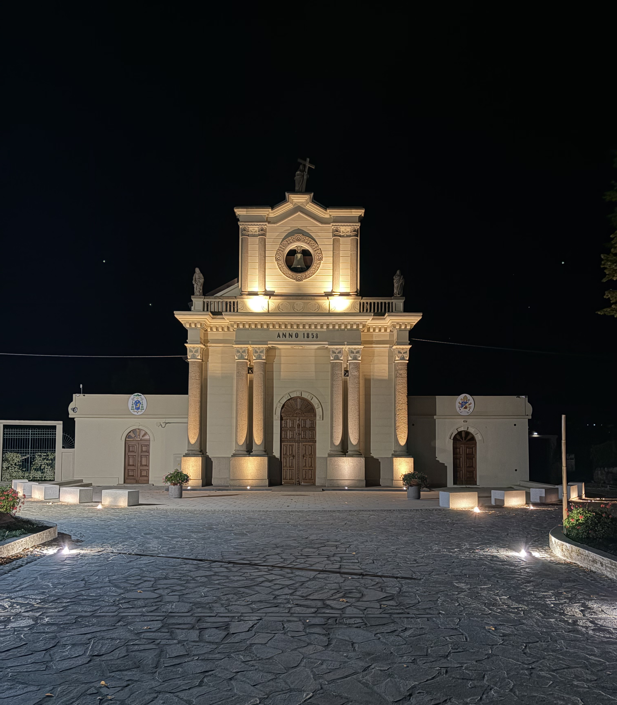
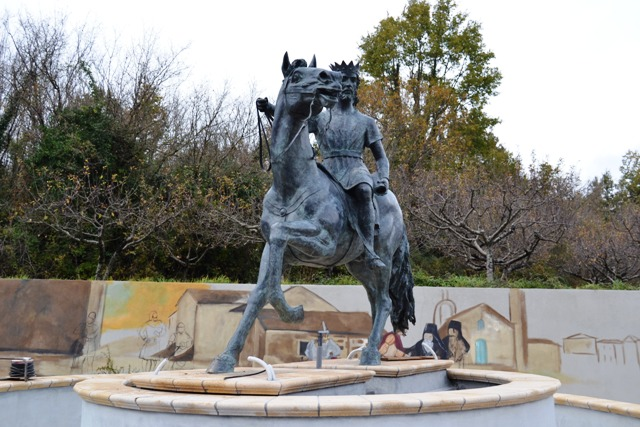
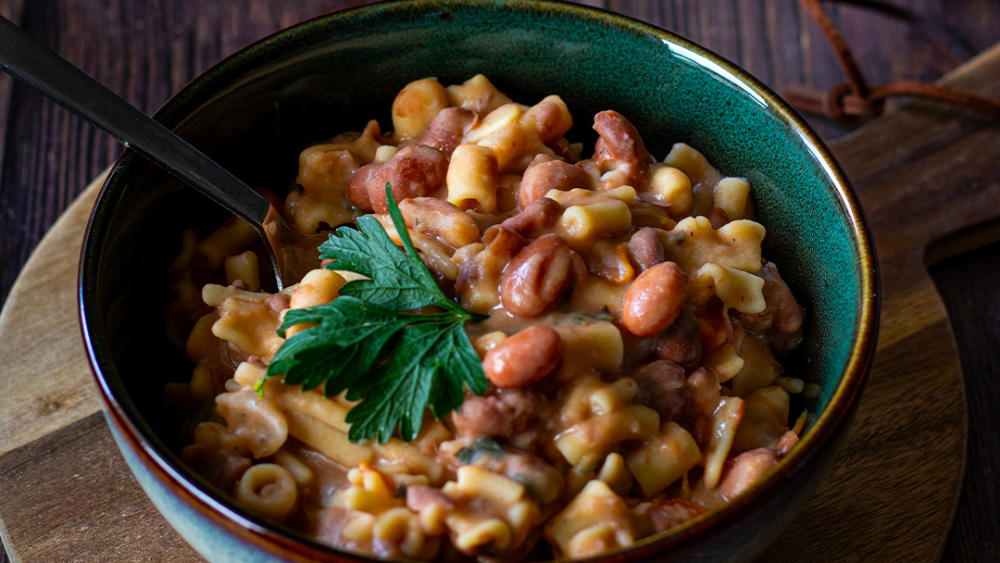

Data
1 / 1
Un gruppo di giovani uniti dalla passione per Torre di Ruggiero. Rianimiamo la nostra storia, la cultura e le tradizioni nel cuore delle Serre Calabresi.
Abbiamo scelto di metterci la faccia e l'impegno per dare voce a Torre di Ruggiero, creando occasioni d'incontro e rilanciando la nostra comunità.
Cinema in piazza, musica dal vivo, valorizzazione dei vicoli e spazi aperti alle proposte di tutti i ragazzi del territorio.
Salvaguardare e valorizzare ciò che i nostri nonni ci hanno tramandato: devozione, usanze contadine e radici storiche.
La Pro Loco appartiene a tutti: chi vive qui tutto l'anno, chi ritorna con orgoglio e chi desidera vedere Torre rifiorire.
La storia millenaria dei Normanni, le leggende del borgo e i sapori tipici della nostra terra. Clicca su ciascuna card per leggerne la storia completa.

Punto di riferimento spirituale per tutta la Calabria, meta di fede, raccoglimento e secolare devozione popolare.

Simbolo identitario del borgo legato alle gesta di Ruggiero I il Normanno. La maestosa statua equestre celebra le radici del nostro paese.

I piatti fumanti della cucina contadina come la storica pasta e fagioli, la rinomata nocciola di Torre e i sapori genuini delle feste.
Rivivi le emozioni, i sorrisi e i momenti più belli condivisi insieme nel nostro paese. Clicca su un album per sfogliare gli scatti della serata.
Ogni iniziativa vive grazie al supporto di chi crede in questo paese. Tesserarsi è un piccolo gesto concreto per dare continuità e forza ai progetti dei giovani.
Crediamo nella sinergia con le attività produttive, i commercianti e le aziende del nostro territorio per far crescere il borgo e realizzare eventi di qualità.
Vuoi dare visibilità alla tua attività e sostenere concretamente le rassegne culturali, il cinema e le feste tradizionali? Il tuo logo sarà presente sul nostro sito ufficiale, sui canali social e su tutte le locandine degli eventi.
Vuoi proporre un'idea per un evento, chiedere info sul tesseramento o unirti al gruppo di lavoro? Scrivici subito!